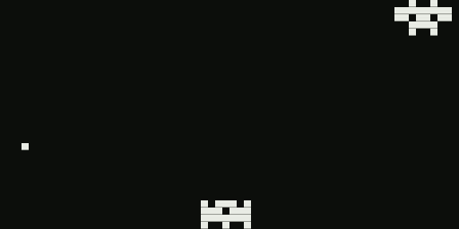

Alien
K. Bolch · DREAMER no. 3 (1980-11) p. 11 1K RAM

A shooter in which your base must stop waves of aliens; you have three bases and earn an extra one for ten or more kills. Bullets can be steered a little by moving the base. The high score version adds an end-of-game screen with the score and the best score of the series.
Keys
0 left, 2 right, 1 fire.
Files
| File | Version | Load | Run |
|---|---|---|---|
| Alien.d68 | main | 0080-02FF | C000 |
| Alien (high score).d68 | high score | 0080-033A | C000 |
Listing as transcribed (with notes): alien.txt, alien_high_score.txt
Source
DREAMER no. 3 on archive.org, p. 11 (PDF page 13). Author: K. Bolch.
Corrections applied
- 021E 6401, 0224 6400, 022A 6402 restored from the article and the code (the scanned copy has an unreadable hand-written key remap over the printed digits).
- High score version: issue 12 modification by Edward Perati: 00F0 F00A -> 2300, new code 0300-0337 and score store 0338-033A.
Open doubts
None.